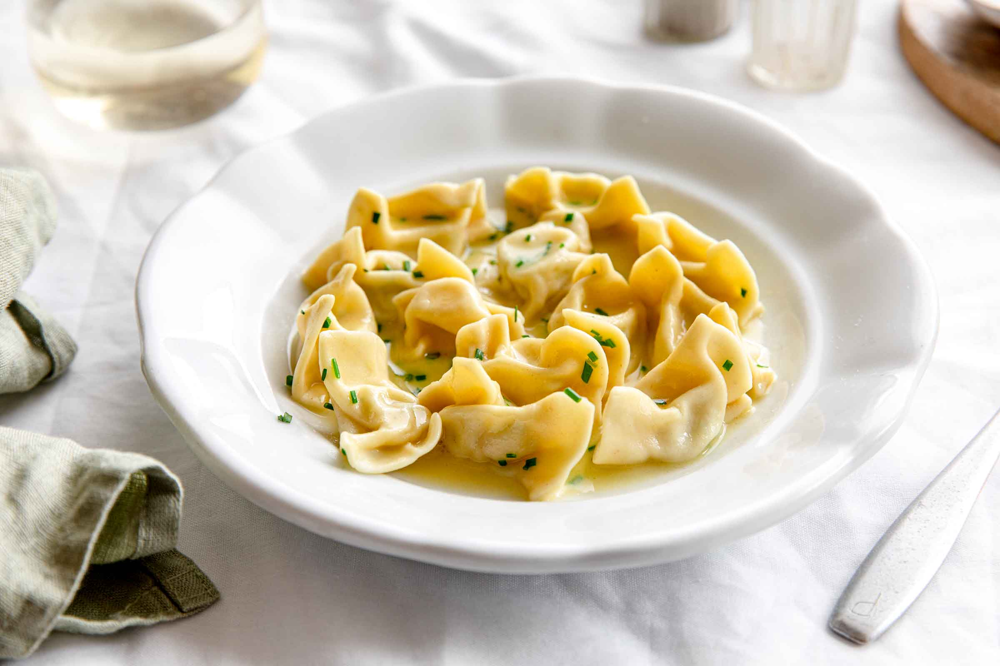
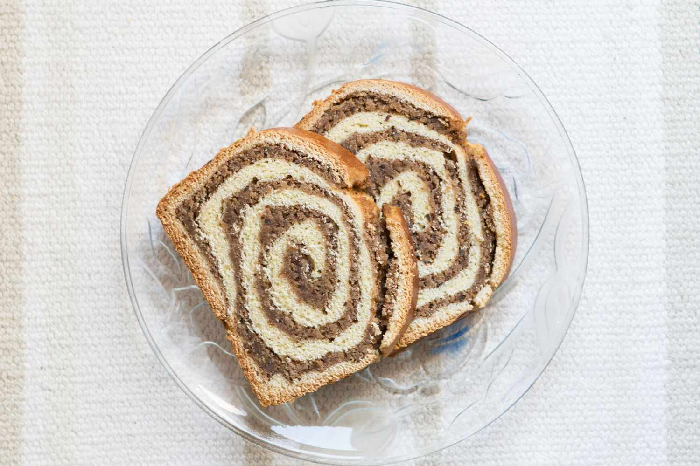
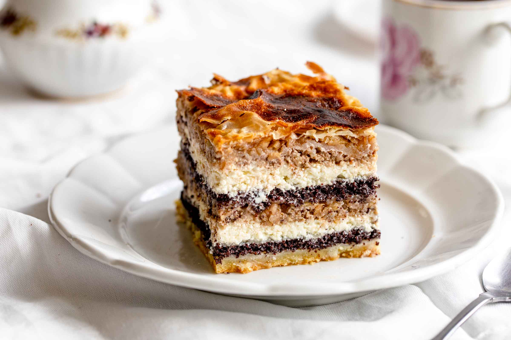
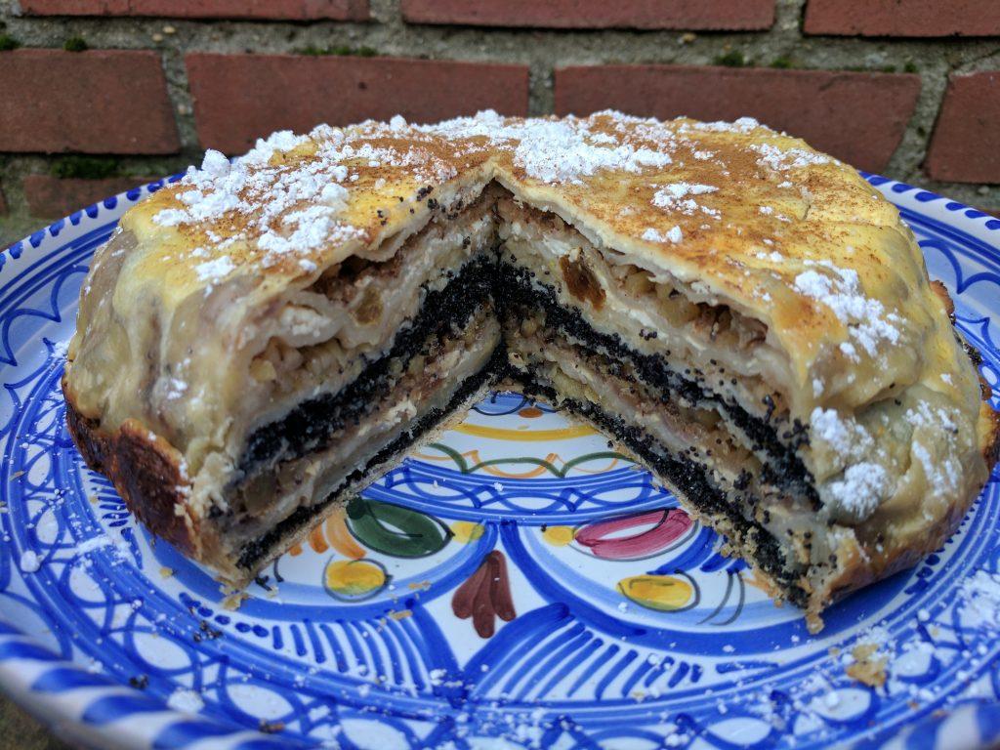
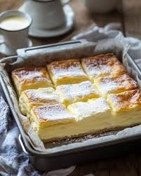
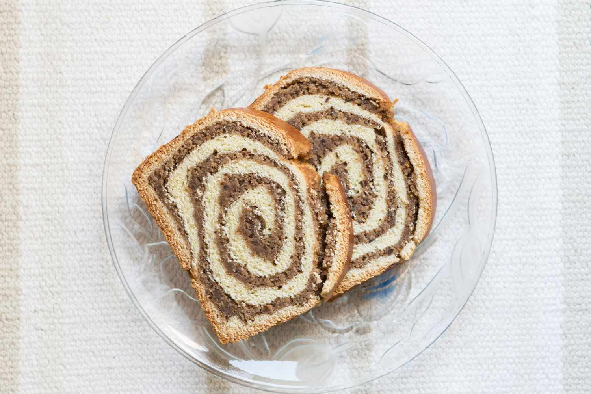
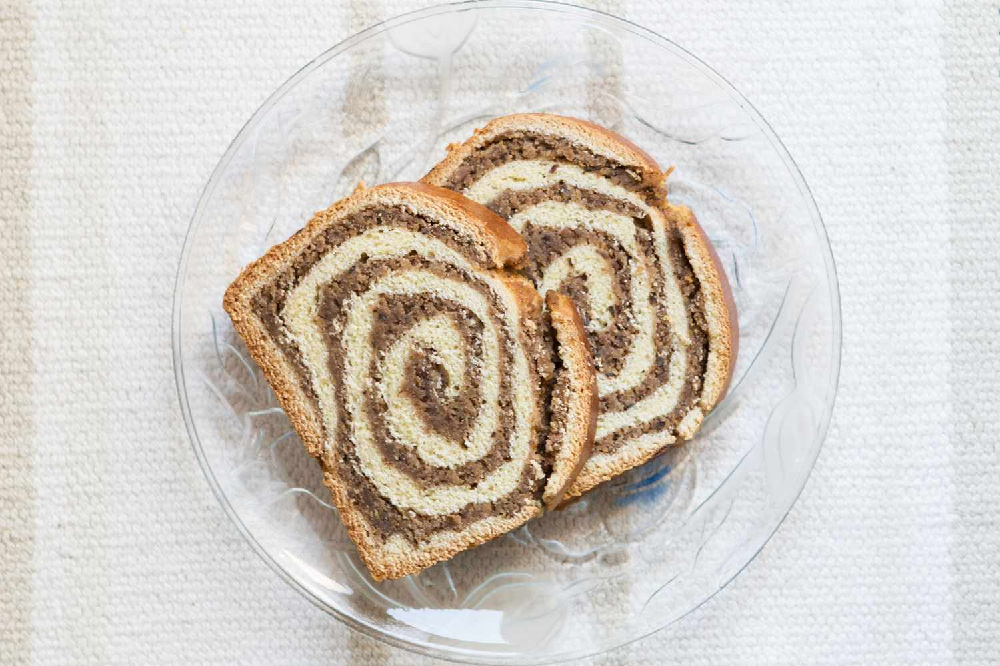
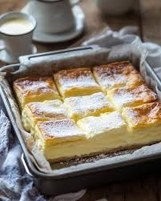
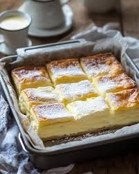

Kranjska klobasa is more than just a sausage — it’s Slovenia’s edible heritage, crafted the old-school way and loved across
generations. Juicy, smoky, and perfectly spiced, it tells a story of alpine kitchens, wooden tables, and slow meals shared with
friends. Served with mustard, fresh bread, and a smile, this iconic bite is comfort food with soul. One taste, and you’re not just
eating — you’re experiencing Slovenia, the way it’s always been done, and the way travelers remember it.
Jota
Jota is a warm hug in a bowl — a humble, hearty stew that carries the soul of Slovenia’s kitchens. Made with sauerkraut or turnip,
beans, potatoes, and slow-cooked flavors, it’s comfort food rooted in tradition and mountain life. Simple ingredients, timeless
recipes, zero rush. Enjoyed after a day in the cold or shared around a rustic table, jota invites travelers to slow down, taste
history, and feel at home — one spoonful at a time.
Idrijski žlikrofi

Idrijski žlikrofi are tiny pockets of tradition — delicate dumplings shaped by hand, filled with seasoned potatoes and wrapped in
centuries of Slovenian heritage. Born in the old mining town of Idrija, they’re a true local pride, often served with rich sauces or
the iconic bakalca. Each bite is soft, comforting, and deeply nostalgic. For travelers, tasting žlikrofi isn’t just a meal — it’s a
quiet moment of connection with Slovenia’s past, where patience, craft, and good food still matter.
Potica

Potica is Slovenia’s soul baked into a spiral — a traditional rolled cake filled with rich walnuts, honey, poppy seeds, or tarragon,
passed down through generations. Once reserved for holidays and family gatherings, today it welcomes visitors with the warmth of home
and tradition. Its soft dough and fragrant filling tell stories of slow baking, shared tables, and old customs that still live on.
Trying potica isn’t just dessert — it’s a sweet invitation into Slovenian culture, timeless and heartfelt.
Prekmurska gibanica


Prekmurska gibanica is a true celebration layered in pastry — rich, generous, and proudly traditional. This iconic dessert from
northeastern Slovenia brings together poppy seeds, walnuts, apples, raisins, and creamy curd, stacked in perfect harmony. Every slice
feels like a feast of history, baked for weddings, holidays, and moments meant to be remembered. Sweet, comforting, and indulgent in
the old-school way, Prekmurska gibanica invites travelers to slow down, savor each layer, and taste Slovenia at its most heartfelt.
Blejska kremšnita

Blejska kremšnita, or Bled Cream Cake, is Slovenia’s beloved sweet masterpiece, delicate and airy like the mist over Lake Bled. With
its golden puff pastry, silky custard, and whipped cream, each bite is a gentle celebration of flavor and tradition. Served in charming
lakeside cafés, it invites visitors to linger, savor the view, and taste a slice of Slovenia’s heart — a dessert as magical as the
fairytale island it overlooks.


 

 
